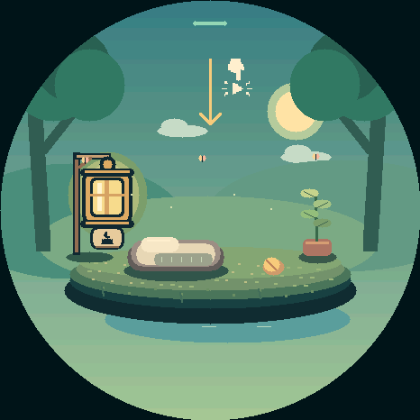

First steps, then a special delivery
A picture-led swipe and lantern lesson welcomes fresh games. The egg then floats into the grove by parachute. Unfinished lessons resume; an interrupted descent replays. Existing browser companions keep their lives.